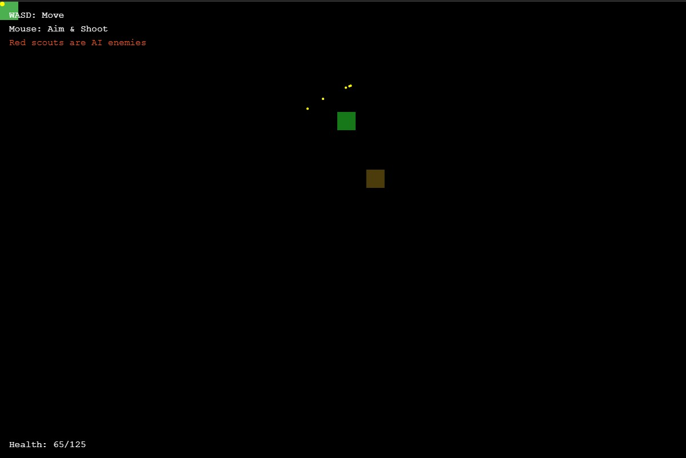

저번에 개같이 실패한 이후 문서화에만 적용해보기로 해봤다.
아무래도 한글보다 영어가 토큰을 적게 사용하기 때문에 영어로 문서화 요청을 했다.
저번에 문서화는 그래도 나름 만족을 했기 때문에 챗GPT 동원해서 영어로 명령을 내렸는데,
생각해보니까 에셋이 없는 상태로 작은 기능 단위로 천천히 구현해보면 잘 될지도 모르겠다는
생각이 들어서. 간단한 기능 템플릿 작성을 시켜봤더니 생각보다 잘 되더이다.
서버도 이전엔 지 맘대로 python으로 만들고 계속 실패하더니. 이번엔 express로 서버 구현하라고
명시적으로 문서화 해놓으니 문제 없이 잘 만들었다.

그냥 명령 한 번에 모든걸 처리하려 하지 말고,
명령 한 번당 소스코드 파일 하나 작성한다고 생각하고 작게 나눠서 시키니까 AI까지 구현하더이다.
구조 분석과 명확한 명령만 있으면 역시 쓸만하겠다. 프로젝트가 커질수록 비용은 늘어나겠지만.
초기에 빠르게 프로토타입 템플릿을 만들기엔 생산성이 아주 좋아 보인다.